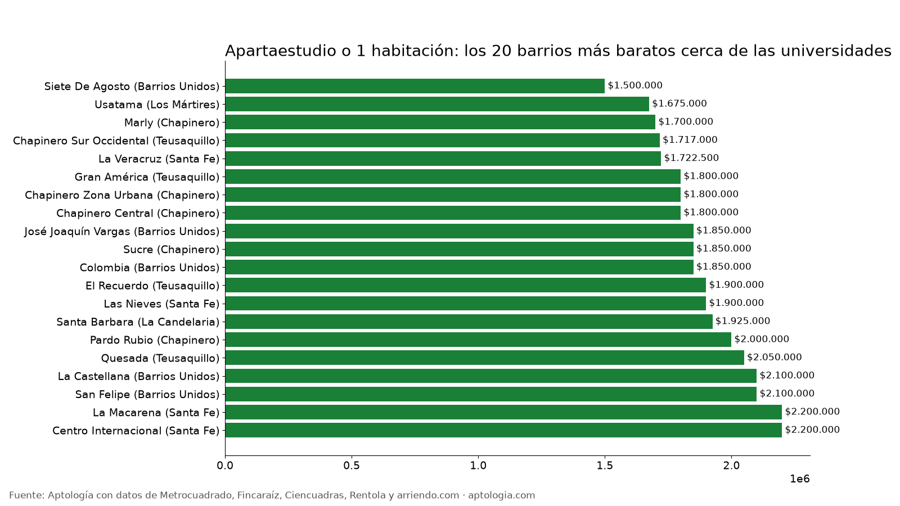

Barrios para estudiantes en Bogotá: apartaestudios y 1 habitación cerca de las universidades (2026)
Estudio con datos abiertos (CC BY 4.0). Versión original: https://www.aptologia.com/estudios/barrios-para-estudiantes-bogota · DOI: 10.5281/zenodo.23344664
Cerca de las universidades de Bogotá, el apartaestudio o apartamento de 1 habitación más barato está en Siete De Agosto (Barrios Unidos), con un canon mediano de $1.500.000. Por localidad, la mediana va de $1.500.000 en Los Mártires a $2.400.000 en Chapinero.
Resumen: analizamos 1.408 apartaestudios y apartamentos de 1 habitación en arriendo, únicos, en las 6 localidades con más universidades de Bogotá.
Actualizado: 13 de octubre de 2026 · Próxima actualización: mensual.

Por localidad
| Localidad | Canon mediano | Avisos |
|---|---|---|
| Los Mártires | $1.500.000 | 51 |
| La Candelaria | $1.850.000 | 29 |
| Teusaquillo | $1.900.000 | 206 |
| Barrios Unidos | $1.950.000 | 198 |
| Santa Fe | $1.988.400 | 274 |
| Chapinero | $2.400.000 | 650 |
Barrios (10 avisos o más)
| Barrio | Localidad | Canon mediano | Área mediana | % por debajo de $1.500.000 | Avisos |
|---|---|---|---|---|---|
| Siete De Agosto | Barrios Unidos | $1.500.000 | 25 m² | 89,3 % | 28 |
| Usatama | Los Mártires | $1.675.000 | 26 m² | 40,0 % | 10 |
| Marly | Chapinero | $1.700.000 | 34 m² | 26,7 % | 15 |
| Chapinero Sur Occidental | Teusaquillo | $1.717.000 | 27 m² | 30,0 % | 20 |
| La Veracruz | Santa Fe | $1.722.500 | 25 m² | 19,6 % | 46 |
| Gran América | Teusaquillo | $1.800.000 | 24 m² | 10,0 % | 20 |
| Chapinero Zona Urbana | Chapinero | $1.800.000 | 30 m² | 14,3 % | 14 |
| Chapinero Central | Chapinero | $1.800.000 | 30 m² | 16,1 % | 87 |
| José Joaquín Vargas | Barrios Unidos | $1.850.000 | 30 m² | 7,7 % | 13 |
| Sucre | Chapinero | $1.850.000 | 34 m² | 17,4 % | 23 |
| Colombia | Barrios Unidos | $1.850.000 | 25 m² | 9,1 % | 11 |
| El Recuerdo | Teusaquillo | $1.900.000 | 30 m² | 8,3 % | 36 |
| Las Nieves | Santa Fe | $1.900.000 | 31 m² | 14,7 % | 68 |
| Santa Barbara | La Candelaria | $1.925.000 | 31 m² | 30,0 % | 10 |
| Pardo Rubio | Chapinero | $2.000.000 | 36 m² | 0,0 % | 16 |
| Quesada | Teusaquillo | $2.050.000 | 31 m² | 25,0 % | 16 |
| La Castellana | Barrios Unidos | $2.100.000 | 22 m² | 6,9 % | 29 |
| San Felipe | Barrios Unidos | $2.100.000 | 24 m² | 18,2 % | 11 |
| La Macarena | Santa Fe | $2.200.000 | 41 m² | 13,3 % | 15 |
| Centro Internacional | Santa Fe | $2.200.000 | 32 m² | 9,7 % | 31 |
| Juan Xxiii | Barrios Unidos | $2.250.000 | 40 m² | 11,1 % | 18 |
| Polo Club | Barrios Unidos | $2.300.000 | 29 m² | 14,3 % | 21 |
| Alcazares | Barrios Unidos | $2.300.000 | 38 m² | 0,0 % | 13 |
| San Martin | Santa Fe | $2.400.000 | 37 m² | 3,8 % | 26 |
| Samper | Santa Fe | $2.431.700 | 33 m² | 0,0 % | 38 |
| Chapinero Alto Zona Urbana | Chapinero | $2.500.000 | 45 m² | 0,0 % | 17 |
| Quinta Camacho | Chapinero | $2.690.000 | 36 m² | 0,0 % | 15 |
| Nicolas De Federman | Teusaquillo | $2.700.000 | 43 m² | 0,0 % | 11 |
| Chapinero Alto | Chapinero | $2.700.000 | 43 m² | 6,1 % | 33 |
| Egipto | La Candelaria | $2.760.000 | 39 m² | 10,0 % | 10 |
| Emaus | Chapinero | $2.800.000 | 45 m² | 0,0 % | 11 |
| Quinta Paredes | Teusaquillo | $2.900.000 | 32 m² | 0,0 % | 12 |
| La Porciuncula | Chapinero | $3.000.000 | 45 m² | 0,0 % | 13 |
| María Cristina | Chapinero | $3.343.000 | 55 m² | 10,0 % | 10 |
| Chicó Norte | Chapinero | $3.700.000 | 40 m² | 0,0 % | 37 |
| Antiguo Country | Chapinero | $3.872.000 | 55 m² | 0,0 % | 19 |
| Chico Norte Et. Iii | Chapinero | $4.085.000 | 51 m² | 0,0 % | 59 |
| Chico Norte Et. Ii | Chapinero | $4.200.000 | 52 m² | 0,0 % | 35 |
| Chico | Chapinero | $4.650.000 | 57 m² | 0,0 % | 10 |
| Los Rosales | Chapinero | $6.000.000 | 90 m² | 0,0 % | 11 |
Cómo usarlo para decidir: fija tu tope (por ejemplo $1.500.000) y usa la última columna para ver en qué barrios tienes más opciones dentro de él.
Preguntas frecuentes
¿Cuál es el barrio más barato para estudiantes en Bogotá? Cerca de las universidades (Chapinero, Teusaquillo, Santa Fe, La Candelaria, Barrios Unidos y Los Mártires), Siete De Agosto, con $1.500.000 al mes para un apartaestudio o 1 habitación, corte al 13 de octubre de 2026.
¿Cuánto cuesta un apartaestudio en Chapinero? La mediana para apartaestudio o 1 habitación es $2.400.000 al mes.
Metodología
- Fuente: base de ingesta diaria de Aptología, con avisos públicos de Metrocuadrado, Fincaraíz, Ciencuadras, Rentola y arriendo.com. Corte al 13 de octubre de 2026.
- Filtros: avisos vivos que pasan el control de calidad, en Bogotá, canon entre $400.000 y $30.000.000. Se excluyen TikTok y Facebook Marketplace.
- Duplicados: se deja un aviso por grupo de duplicados (el mismo inmueble en varios portales).
- Zona universitaria: localidades de Chapinero, Teusaquillo, Santa Fe, La Candelaria, Barrios Unidos y Los Mártires, donde están la mayoría de universidades. Barrios con 10 avisos o más.
- Limitaciones: son precios pedidos, no cerrados. Los barrios y localidades vienen tal como los escribe cada portal.
- Datos abiertos: datos.csv, licencia CC BY 4.0.
Cómo citar
Pinzón Pineda, D. M. (2026). Barrios para estudiantes en Bogotá: apartaestudios y 1 habitación cerca de las universidades (2026). Aptología. https://www.aptologia.com/estudios/barrios-para-estudiantes-bogota. Datos: datos.csv, licencia CC BY 4.0.